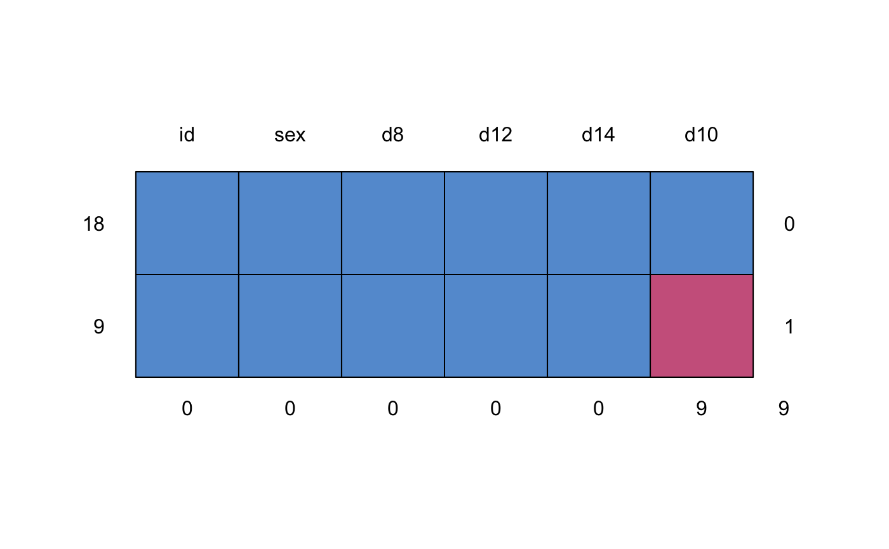

Data from Potthoff-Roy (1964) with repeated measures on dental fissures.
tbs is a data frame with 27 rows and 6 columns:
Person number
Sex M/F
Distance at age 8 years
Distance at age 10 years
Distance at age 12 years
Distance at age 14 years
Potthoff, R. F., Roy, S. N. (1964). A generalized multivariate analysis of variance model usefully especially for growth curve problems. Biometrika, 51(3), 313-326.
Little, R. J. A., Rubin, D. B. (1987). Statistical Analysis with Missing Data. New York: John Wiley & Sons.
Van Buuren, S. (2018). Flexible Imputation of Missing Data. Second Edition. Chapman & Hall/CRC. Boca Raton, FL.
This data set is the famous Potthoff-Roy data, used to demonstrate MANOVA on repeated measure data. Potthoff and Roy (1964) published classic data on a study in 16 boys and 11 girls, who at ages 8, 10, 12, and 14 had the distance (mm) from the center of the pituitary gland to the pteryomaxillary fissure measured. Changes in pituitary-pteryomaxillary distances during growth is important in orthodontic therapy. The goals of the study were to describe the distance in boys and girls as simple functions of age, and then to compare the functions for boys and girls. The data have been reanalyzed by many authors including Jennrich and Schluchter (1986), Little and Rubin (1987), Pinheiro and Bates (2000), Verbeke and Molenberghs (2000) and Molenberghs and Kenward (2007). See Chapter 9 of Van Buuren (2012) for a challenging exercise using these data.
### create missing values at age 10 as in Little and Rubin (1987) phr <- potthoffroy idmis <- c(3, 6, 9, 10, 13, 16, 23, 24, 27) phr[idmis, 4] <- NA phr #> id sex d8 d10 d12 d14 #> 1 1 F 21.0 20.0 21.5 23.0 #> 2 2 F 21.0 21.5 24.0 25.5 #> 3 3 F 20.5 NA 24.5 26.0 #> 4 4 F 23.5 24.5 25.0 26.5 #> 5 5 F 21.5 23.0 22.5 23.5 #> 6 6 F 20.0 NA 21.0 22.5 #> 7 7 F 21.5 22.5 23.0 25.0 #> 8 8 F 23.0 23.0 23.5 24.0 #> 9 9 F 20.0 NA 22.0 21.5 #> 10 10 F 16.5 NA 19.0 19.5 #> 11 11 F 24.5 25.0 28.0 28.0 #> 12 12 M 26.0 25.0 29.0 31.0 #> 13 13 M 21.5 NA 23.0 26.5 #> 14 14 M 23.0 22.5 24.0 27.5 #> 15 15 M 25.5 27.5 26.5 27.0 #> 16 16 M 20.0 NA 22.5 26.0 #> 17 17 M 24.5 25.5 27.0 28.5 #> 18 18 M 22.0 22.0 24.5 26.5 #> 19 19 M 24.0 21.5 24.5 25.5 #> 20 20 M 23.0 20.5 31.0 26.0 #> 21 21 M 27.5 28.0 31.0 31.5 #> 22 22 M 23.0 23.0 23.5 25.0 #> 23 23 M 21.5 NA 24.0 28.0 #> 24 24 M 17.0 NA 26.0 29.5 #> 25 25 M 22.5 25.5 25.5 26.0 #> 26 26 M 23.0 24.5 26.0 30.0 #> 27 27 M 22.0 NA 23.5 25.0 md.pattern(phr)  #> id sex d8 d12 d14 d10 #> 18 1 1 1 1 1 1 0 #> 9 1 1 1 1 1 0 1 #> 0 0 0 0 0 9 9